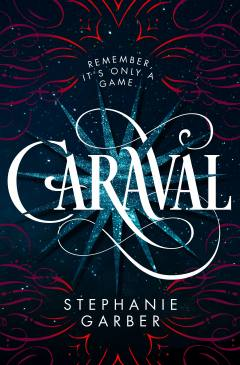

CSehrli va sirli Caraval o'yiniga chorlovchi ajoyib fantastik roman.
Ushbu asar bosh qahramon Skarletning yetti yil davomida sehrli Caraval o'yiniga taklifnoma olishga intilishi haqida hikoya qiladi. Singlisi Donatella bilan birgalikda ular kutilmagan sarguzashtlar va sirli voqealar dunyosiga qadam qo'yadilar. Kitob o'quvchini sehr va sir-asrorlarga boy olib kiradi.